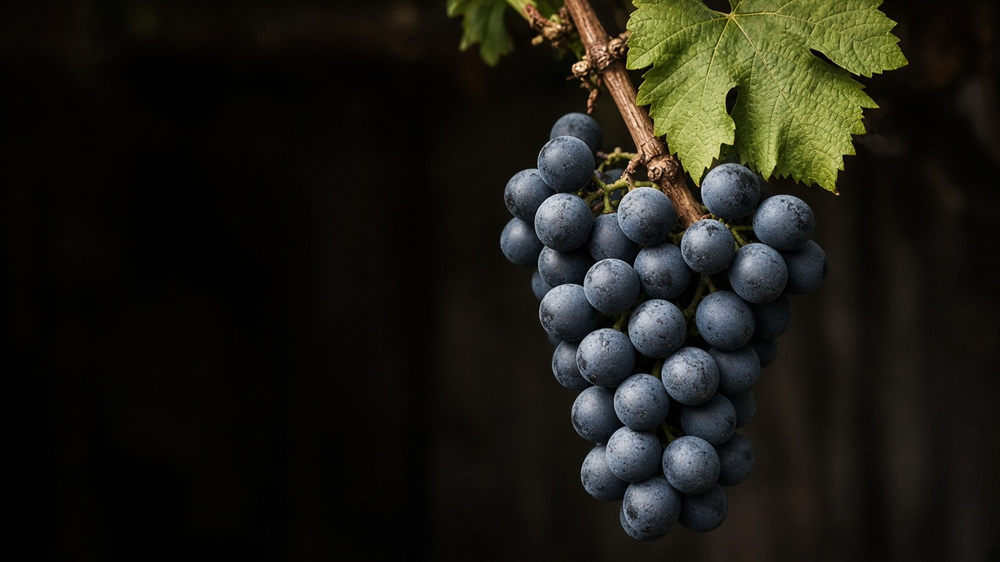

In the cellar
Example
Lot 24-B
14 days past the usual time
Worth a look today, before it becomes a loss.
For small agricultural producers in the U.S.
Vinya turns the harvest, inventory, and sales records you already keep — on paper, in spreadsheets, or in a system — into early warnings, so spoilage gets caught before it happens, not after.
Talk about a free pilot
In the cellar
Example
Lot 24-B
14 days past the usual time
Worth a look today, before it becomes a loss.
For the owner
Example
What each line actually keeps
| Line | Cost | Left |
|---|---|---|
| Chambourcin | $9.40 | $12.60 |
| House red | $14.10 | $1.90 |
Fruit, labor, and overhead, so you can see which line is paying you.
Most small producers already run an ERP system, but it records what already happened — it doesn't flag what's about to. The result: a batch is lost, a harvest is overproduced, or a cost is discovered too late to act on it.
8 weeks
earlier — how much sooner USDA sensor technology detected oxidative faults in white wine than a human tasting panel (USDA ARS, May 2025)
10,761
wineries in the U.S., most of them small family-owned businesses (WineAmerica, 2025)
30–40%
of the U.S. food supply is lost or wasted (USDA)
Each module builds on your own production data. If you're already tracking it digitally, Vinya works with what you have. If you're not yet, we help set that up as part of getting started.
Compares how long a batch has sat in a production stage against the expected historical range, and flags it before the risk turns into a loss.
Links what was harvested by block or varietal to what was actually bottled, pointing out where more product than expected is being lost.
Compares planned production volume against actual sales demand, so producers don't make more than the market will absorb.
Calculates the real cost per bottle — raw material, labor, overhead — so producers know which line is actually turning a profit.
Luis Hinostroza
ERP consultant and Oracle Fusion Financials support specialist, with more than two decades leading technology infrastructure and projects for mission-critical operations — including a 200+ server data center and real-time billing systems serving over a million users. Founder of Hinos Investments LLC.
Six Sigma Black Belt · ITIL · ISO/IEC 20000-1 · OCI AI Foundations Associate · MBA
If your operation handles harvest, perishable inventory, or batch production — whether you're already using a digital system or just getting started — let's talk. No cost or commitment during the pilot phase.
Get in touchVinya is a project in development by Hinos Investments LLC, Orlando, Florida.